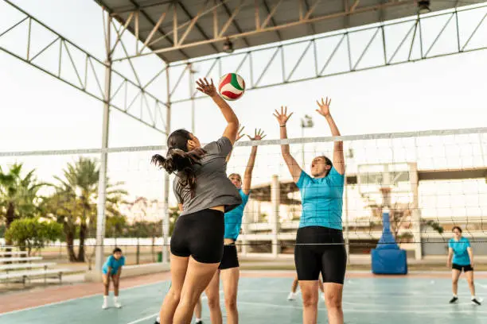
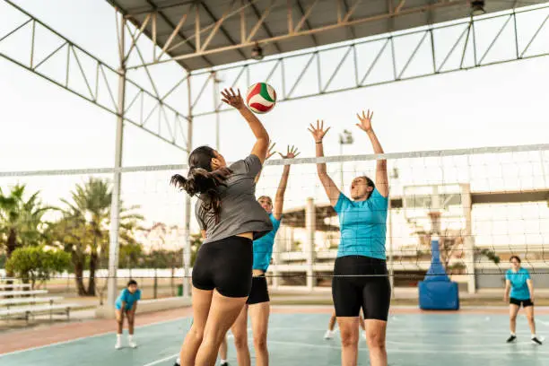

History
Where did i come from
Once upon a time, in a small town nestled in the rolling hills of France, there lived a young and ambitious student named Baptiste. He was a spirited and determined individual, known throughout his community for his passion for sports and his unyielding dedication to his studies.
Baptiste's love for sports was evident from a very young age. As a child, he would spend countless hours kicking a soccer ball around the local park or challenging his friends to impromptu races down the tree-lined streets. His parents, who had always encouraged his enthusiasm for physical activities, recognized his potential early on.
Growing up, Baptiste's energy and enthusiasm for sports were matched only by his discipline and commitment to his academic pursuits. He excelled in his studies, earning top grades in school. His teachers often praised his strong work ethic and his ability to balance his schoolwork with his passion for sports.
When he reached high school, Baptiste faced a turning point. He realized that he wanted to take his love for sports to the next level. He aspired to become not just a student but also an athlete. He began to train rigorously, focusing on a variety of sports like soccer, track and field, and even tennis.
Through hard work and dedication, Baptiste made a name for himself in local sports circles. He was an exceptional athlete, and his natural talent, combined with his unwavering determination, attracted the attention of coaches and scouts. Soon, he was competing in regional and national events, representing his town and school with pride.
Baptiste's journey wasn't without challenges. He faced setbacks, injuries, and moments of self-doubt. However, he used each obstacle as an opportunity to learn, grow, and become a better athlete and student. His perseverance and resilience were his greatest allies in the face of adversity.
As Baptiste continued to excel in both sports and academics, universities took notice. His hard work paid off when he received athletic scholarships from several prestigious institutions. Baptiste faced a tough decision - choosing between pursuing his athletic dreams and his academic goals.
Thank you Chat GPT for this amaysing story about an anonymous Baptiste
All the sports that i did
 


And many others...